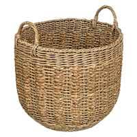
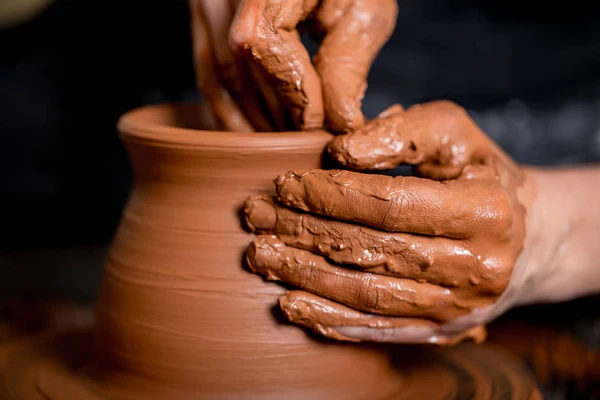

| NAMES | IMAGES | SHORT DESCRIPTION | LINKS FOR MORE INFO... |
|---|---|---|---|
| WOVEN BASKETS |  | involves skilled techniques like weaving, coiling,plaiting, and twining to transform raw materials into a structured form. | rattan-baskets |
| POTTERY |  | pots, dishes, and other articles made of fired clay. Pottery can be broadly divided into earthenware, porcelain, and stoneware. | pottery |
| BEADWORK | decorative work made of beads. | beadwork |